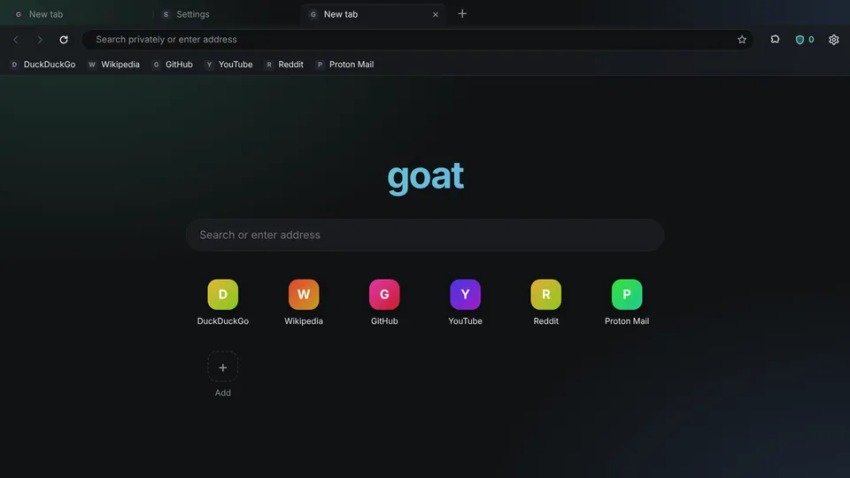

Browse private. Browse fast.
A free browser that blocks ads and trackers, and keeps what you do to yourself.

What you get
No ads
Ads, trackers and cookie pop-ups are blocked.
Hide your location
Turn on Tor with one click.
Private windows
Nothing is saved after you close them.
Harder to track
Websites can't recognize your computer.
Profiles
Keep work and personal separate.
Translate pages
Read any site in your language.
Chrome extensions
Use the extensions you already like.
Folders and themes
Group tabs and make it yours.
Light and fast
Unused tabs sleep to save memory.
FAQ
Windows says "Windows protected your PC"
Windows shows this for new apps. Click More info, then Run anyway.
How do I run it on Linux?
Download it, right-click it, choose Properties, allow it to run as a program, then double-click it.
Does Goat hide who I am?
It stops ads and trackers. To also hide your location, turn on Tor in Goat or use a VPN.
Where is my data?
Only on your computer. There's no account to sign up for.